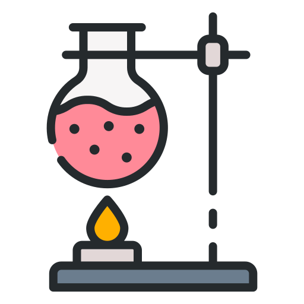
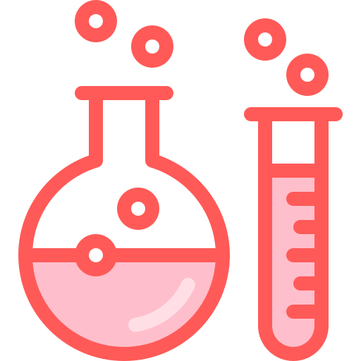

Еволюція хімічних знань — це довгий і складний процес, який почався ще в стародавні часи і
продовжується донині. Хімія, як наука, пройшла кілька ключових етапів розвитку, кожен з яких вніс
свій вклад у сучасні знання про природу речовин і їх властивості.

1. Стародавня хімія та алхімія
У перші періоди розвитку хімічних знань люди використовували базові хімічні процеси в повсякденному
житті, наприклад, виготовлення кераміки, металургію та ферментацію. Алхімія, яка розвивалася в
Стародавньому Єгипті, Греції, Китаї та Індії, прагнула перетворити звичайні метали в золото і знайти
"еліксир життя". Незважаючи на містику і забобони, алхіміки відкрили багато хімічних процесів, таких
як дистиляція та випарювання.
2. Епоха наукової революції (XVI–XVIII століття)
Наукова революція кардинально змінила підхід до хімії. Одним із головних досягнень цього періоду
стало відкриття, що повітря — це суміш різних газів, а не одна речовина. Важливу роль у розвитку
хімії відіграли такі вчені, як:
Роберт Бойль (XVII століття) — один із засновників сучасної хімії, запропонував концепцію елементів
та сполук, заклав основи для відходу від алхімії.
Антуан Лавуазьє (XVIII століття) — відкрив закон збереження маси та створив першу систему хімічної
номенклатури. Його робота сприяла розумінню природи хімічних реакцій.

3. XIX століття: розвиток органічної хімії та періодичної таблиці
У XIX столітті відбулося стрімке зростання знань в області органічної хімії. Фрідріх Велер синтезував сечовину з неорганічних речовин, що показало можливість штучного створення органічних сполук. Тим часом Дмитро Менделєєв у 1869 році створив періодичну таблицю елементів, яка стала основою сучасної хімії.
4. XX століття: атомна теорія та квантова хімія
XX століття принесло революційні відкриття в області атомної структури та квантової механіки. Ернест Резерфорд відкрив структуру атома, а Нільс Бор розвинув модель атома, де електрони обертаються навколо ядра. З'явилися нові галузі хімії, такі як квантова хімія та молекулярна біологія. Важливими відкриттями цього часу стали розщеплення атома і створення атомної бомби.